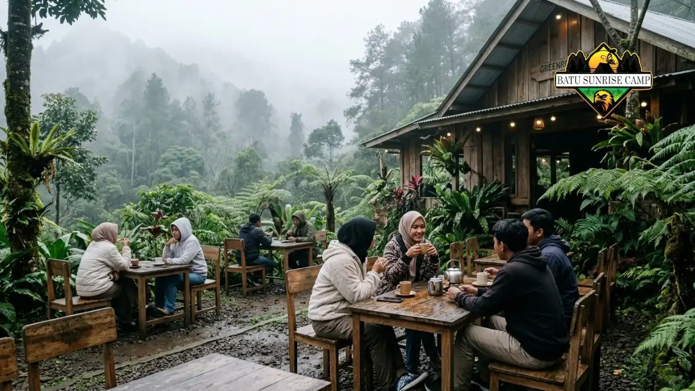

Cafe di kawasan wisata Coban Rondo yang banyak dibahas adalah Dancok Cafe berlatar hutan pinus dan Greenrock Cafe berlatar kabut serta camping.
Cafe Apa Saja yang Ada di Dalam Kawasan Wisata Coban Rondo?
Dua cafe yang tercatat berada di kawasan wisata Coban Rondo adalah Dancok Cafe dan Greenrock Cafe, masing-masing dengan suasana alam yang berbeda.
Kawasan Coban Rondo terletak di Desa Pandesari, Kecamatan Pujon, Kabupaten Malang.
Kawasan ini berada di ketinggian sekitar 1.135 meter di atas permukaan laut menurut Traveloka (Juni 2025), sehingga udaranya sejuk dan sering berkabut.
Dancok Cafe menonjolkan konsep luar ruangan dengan material kayu. Greenrock Cafe menonjolkan nuansa kabut dan arsitektur alam, serta berkaitan dengan layanan camping melalui akun Greenrock Campers.
Dua cafe ini tidak mewakili seluruh usaha kuliner di sekitar Coban Rondo. Pedagang dan warung lain juga dapat ditemui di area wisata, tetapi daftar dan kondisinya dapat berubah dari waktu ke waktu.
Seperti Apa Suasana dan Menu Dancok Cafe?
Dancok Cafe berkonsep luar ruangan dengan bangunan kayu, hammock, dan pemandangan hutan pinus, serta menawarkan menu makanan berat, camilan, dan minuman.
Menurut Traveloka (Juni 2025), Dancok Cafe dirancang menyatu dengan alam. Kursi, meja, lantai, dan bangunan cafe terbuat dari kayu.
Pengunjung dapat menemukan hammock dan ayunan yang sering dipakai sebagai spot foto, serta kursi santai untuk menikmati pemandangan hutan pinus dan lembah Songgor.
Radar Malang (Juli 2024) mencatat menu seperti ayam sambal hijau, nasi dancok, kwetiau, nasi goreng, dori sambal matah, dan bakmie.
Camilan yang disebut mencakup kentang goreng, pisang pasir, roti bakar, mendoan, sosis bakar, singkong keju, dan siomay goreng. Minuman tersedia dalam pilihan kopi dan nonkopi, panas maupun dingin.
Dancok Cafe juga dilaporkan menyediakan paket barbeku dan menu prasmanan untuk acara.
Fasilitas ini relevan bagi rombongan keluarga atau komunitas yang merencanakan pertemuan. Ketersediaan paket tersebut sebaiknya dikonfirmasi karena dapat berubah.

Greenrock Cafe di kawasan wisata Coban Rondo dengan suasana berkabut dan arsitektur bernuansa alam pegunungan.
Seperti Apa Suasana Greenrock Cafe?
Greenrock Cafe menawarkan suasana berkabut dan dingin dengan arsitektur bernuansa alam, sehingga cocok bagi pengunjung yang mencari ketenangan atau ingin berkemah.
Radar Malang (Juli 2024) menyebut Greenrock Cafe berada di area wisata Coban Rondo.
Nuansa kabut dan hawa dingin menjadi ciri utamanya, dan arsitektur bernuansa alam menjadi unsur utama tampilan cafe.
Profil Instagram Greenrock Campers menyebut layanan camping, cafe, dining, dan gathering, serta reservasi melalui WhatsApp.
Pengunjung yang ingin menginap atau menggelar acara kecil disarankan menghubungi pengelola lebih dulu.
Ulasan pengguna di media sosial menyebut pilihan kopi dan cokelat hangat sebagai menu yang cocok untuk cuaca dingin.
Ulasan tersebut bersifat pengalaman pribadi sehingga hasilnya dapat berbeda antar pengunjung.
Karena suasananya berkabut, kondisi visual Greenrock Cafe dapat berubah cepat menurut cuaca.
Pada hari cerah, pemandangan lebih terang. Pada hari berkabut, suasana terasa lebih tenang tetapi jarak pandang lebih terbatas.
Apakah Harus Membayar Tiket Masuk untuk ke Cafe di Kawasan Coban Rondo?
Pengunjung umumnya perlu membeli tiket kawasan Coban Rondo sebelum mencapai cafe di dalamnya, tetapi kebijakan pastinya perlu dikonfirmasi langsung ke pengelola.
IDN Times (Juli 2025) melaporkan tiket Coban Rondo Rp35.000 pada hari biasa dan Rp40.000 pada akhir pekan, dengan jam operasional 07.30-17.00 WIB.
Traveloka (Juni 2025) mencantumkan tarif domestik Rp30.000 pada hari biasa dan Rp35.000 pada akhir pekan atau hari libur, serta tarif lokal lebih rendah.
Profil Instagram Greenrock Campers menampilkan informasi tiket Coban Rondo sebesar Rp25.000 untuk pukul 08.00-16.30 dan Rp10.000 setelah pukul 16.30, sebagaimana tampil pada pencarian September 2026.
Karena angka-angka tersebut berbeda antar sumber, pengunjung perlu memperlakukannya sebagai kisaran dan memeriksa ulang di loket.
Pengunjung yang hanya ingin ke cafe tanpa menjelajah air terjun tetap sebaiknya bertanya dulu apakah tersedia akses khusus. Kebijakan ini dapat berbeda antar cafe dan antar waktu.
Cafe Mana yang Cocok untuk Siapa?
Dancok Cafe cocok untuk pengunjung yang menyukai foto dan hutan pinus, sedangkan Greenrock Cafe cocok untuk pengunjung yang ingin bersantai atau berkemah.
Untuk pasangan dan pengunjung yang menyukai spot foto, Dancok Cafe menawarkan hammock, ayunan, dan bangunan kayu.
Untuk keluarga besar, ketersediaan menu prasmanan dan paket barbeku di Dancok Cafe dapat menjadi pertimbangan.
Untuk pengunjung yang ingin suasana tenang dan opsi menginap, Greenrock Cafe dan layanan campingnya dapat menjadi pilihan.
Namun kondisi dingin dan berkabut kurang nyaman bagi pengunjung yang sensitif terhadap suhu rendah.
Bagi pengunjung yang ingin membandingkan dengan suasana berbeda, cafe di luar kawasan dapat menjadi opsi. Panduan cafe di Pujon dekat Coban Rondo membahas pilihan tersebut.
Bagaimana Tips Agar Kunjungan ke Cafe di Dalam Kawasan Lebih Nyaman?
Tips utama adalah datang pagi, membawa jaket, memeriksa jam buka cafe, dan menyiapkan waktu cukup agar tidak terburu-buru sebelum kawasan tutup pukul 17.00 WIB.
Datanglah pagi agar dapat menjelajah air terjun sebelum beristirahat di cafe. Coban Rondo buka mulai pukul 07.30 WIB menurut IDN Times (Juli 2025).
Bawalah jaket dan alas kaki yang tidak licin. Kawasan Coban Rondo berkabut dan lembap, terutama pada musim hujan.
Periksa jam buka cafe melalui akun resmi. Jam buka cafe dapat berbeda dari jam buka kawasan wisata.
Siapkan uang tunai cadangan. Pembayaran nontunai dapat terkendala sinyal di area pegunungan.
Untuk rencana perjalanan lengkap, baca itinerary sehari Coban Rondo dan cafe terdekat.
Apa Kesalahan Umum Saat Memilih Cafe di Kawasan Coban Rondo?
Kesalahan umum adalah mengandalkan satu ulasan media sosial, tidak memeriksa jam buka, dan lupa bahwa cuaca berkabut dapat mengubah kenyamanan area terbuka.
Kesalahan pertama adalah menganggap satu ulasan mewakili semua pengalaman. Ulasan di media sosial bersifat subjektif dan dapat berubah menurut waktu kunjungan.
Kesalahan kedua adalah tidak memeriksa kebijakan tiket. Karena angka tarif berbeda antar sumber, pengunjung dapat salah memperkirakan biaya.
Kesalahan ketiga adalah tidak menyiapkan rencana cadangan untuk hujan. Cafe dengan area luar ruangan dapat kurang nyaman saat hujan deras.
Kesalahan keempat adalah datang tanpa reservasi untuk rombongan besar. Dancok Cafe dan Greenrock Cafe menyediakan layanan acara dan gathering, sehingga rombongan sebaiknya menghubungi pengelola lebih dulu.
Kesimpulan
Cafe di kawasan wisata Coban Rondo menawarkan dua karakter berbeda. Dancok Cafe menonjol pada hutan pinus dan spot foto kayu, sedangkan Greenrock Cafe menonjol pada suasana berkabut dan opsi camping.
Datanglah pagi, bawa pakaian hangat, dan periksa jam buka serta kebijakan tiket sebelum berangkat.
Karena informasi dapat berubah, konfirmasi langsung ke pengelola tetap menjadi langkah terpenting.